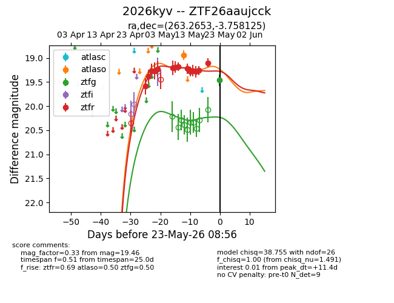
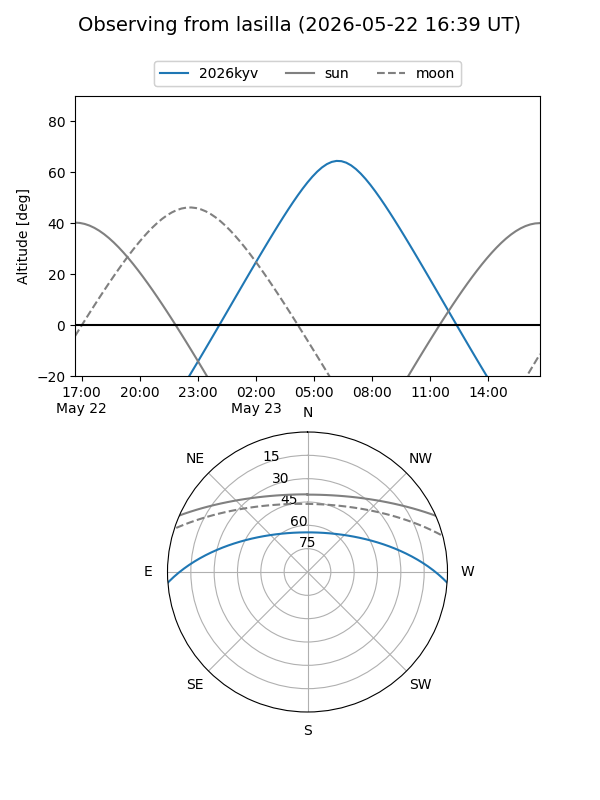
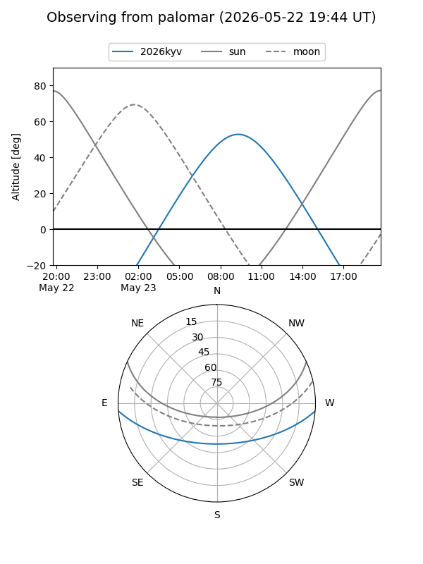
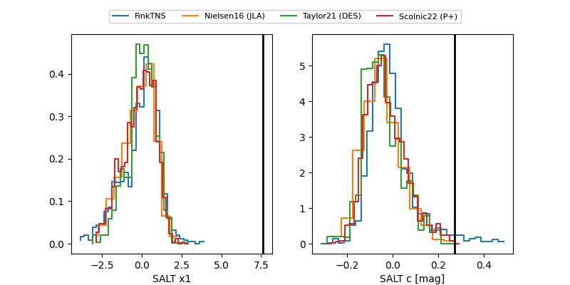

2026kyv
Target 2026kyv at 2026-05-23 08:57
Aliases and brokers:
lsst-FINK: link
lsst-Lasair: link
lsst-ALeRCE: link
ztf-FINK: link
ztf-Lasair: link
ztf-ALeRCE: link
TNS: link
YSE: link
alt names
ZTF26aaujcck (ztf,fink_ztf)
2026kyv (tns,yse)
Coordinates:
equatorial (ra, dec) = 263.2653,-3.75812
equatorial (HMS+DMS) = 17:33:03.67,-03:45:29.25
galactic (l, b) = (20.2859,+15.54133)
Flags:
Photometry:
last atlaso=18.94, ztfg=19.46, ztfr=19.10
1 atlaso, 1 ztfg, 14 ztfr detections
Lightcurve

Visibility


Additional plots
